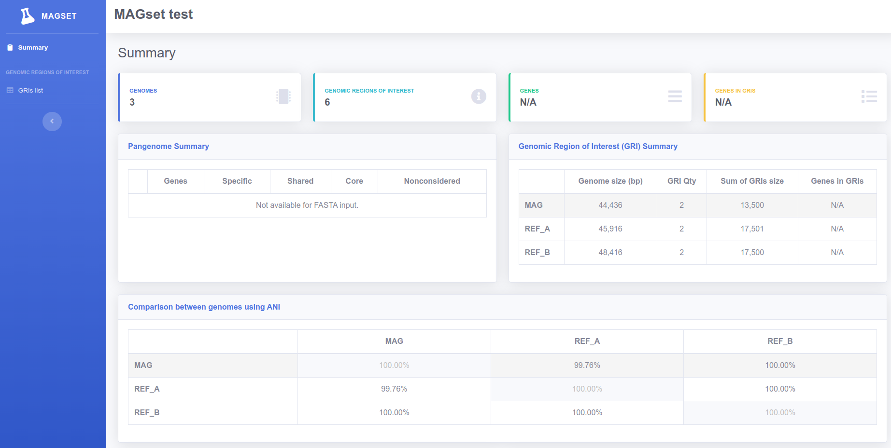

menu_book Quick start tutorial - Running MAGset with .fasta input
In this tutorial we will use small sample genomes to demonstrate how MAGset works. All genome files in
this example are in FASTA format.
- Install MAGSet
- Create a folder to run this test:
mkdir /home/$USER/magset - Change your directory to the test folder:
cd /home/$USER/magset - Download the test data:
wget https://raw.githubusercontent.com/LaboratorioBioinformatica/MAGset/1.5.2/wiki/test-data-quick-start.tar.gz If it takes too long to download the file you can download it directly through this link and move it to the test folder:
mv /home/$USER/Downloads/test-data-quick-start.tar.gz /home/$USER/magset - Unpack the test data:
tar -xvzf test-data-quick-start.tar.gz - Change to the unpacked directory:
cd test/ -
Edit the conf.properties file in your preferred text editor. Update the genomes_folder
property to reflect the absolute path of the test data directory. Similarly, adjust the
output_folder
property to the correct absolute path. If your machine supports fewer than 8 threads (the default
setting), make sure to modify the num_threads property to match the number of threads available
on your
system.. The file should look like this, where your_user should be updated to your actual user:
title=MAGset test
genomes_folder=/home/your_user/magset/test/genomes_folder/
output_folder=/home/your_user/magset/test/output/
num_threads=8
mag_file=MAG.fasta
reference_genome_files=REF_A.fasta,REF_B.fasta
input_type=FASTA
-
Run MAGset:
run-magset.sh conf.properties
The initial run might take a bit longer since it involves downloading the Docker container. Once the script has finished executing, you will see the message "MAGset: done!" in the console. If you see this message, everything is functioning correctly!
Inside the output_folder it will be possible to see all generated files, including the result folder, with HTML and CSV results. The index.html file contains the summary of the results. You can double click and open in your web browser:
 If you wish to use genomes in Genbank format, read our tutorial with Genbank files.